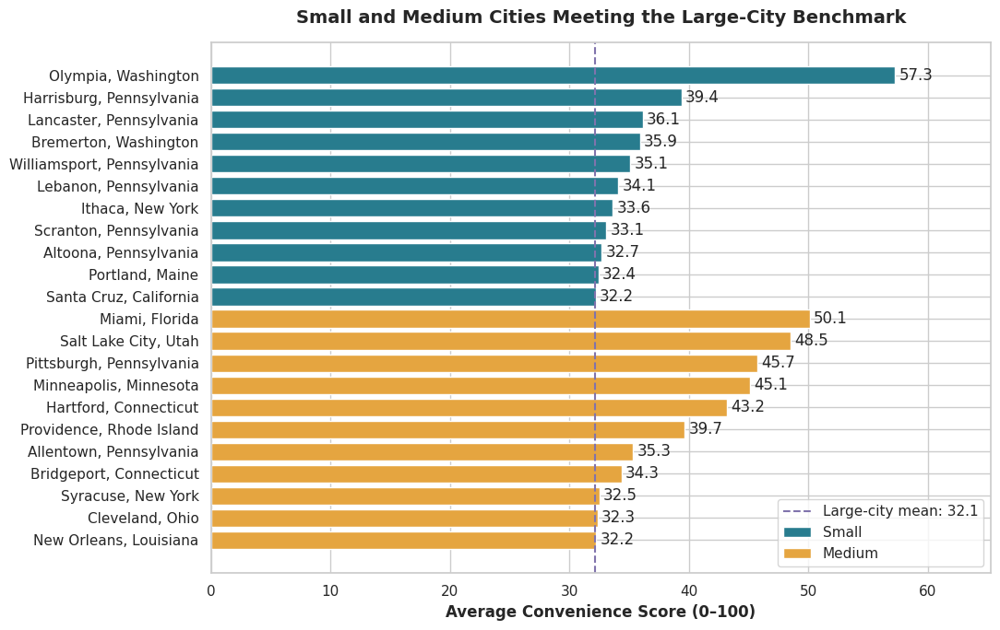
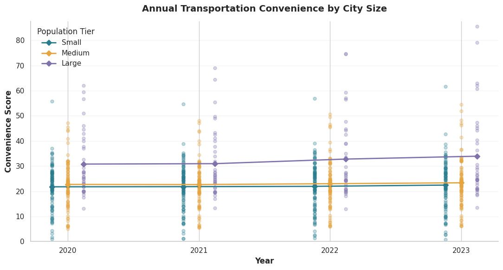
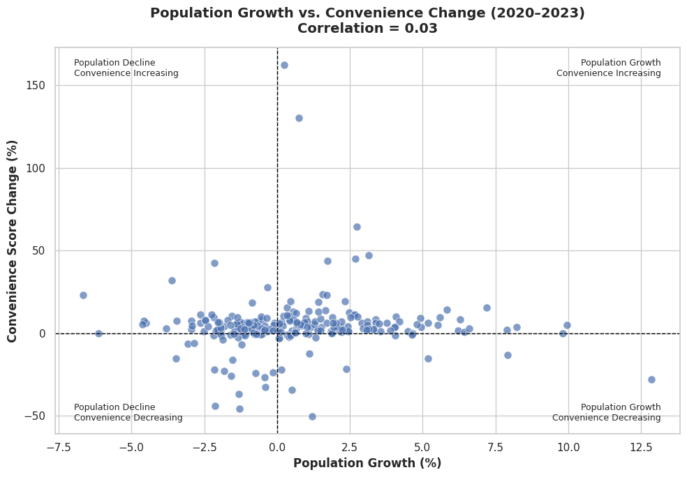
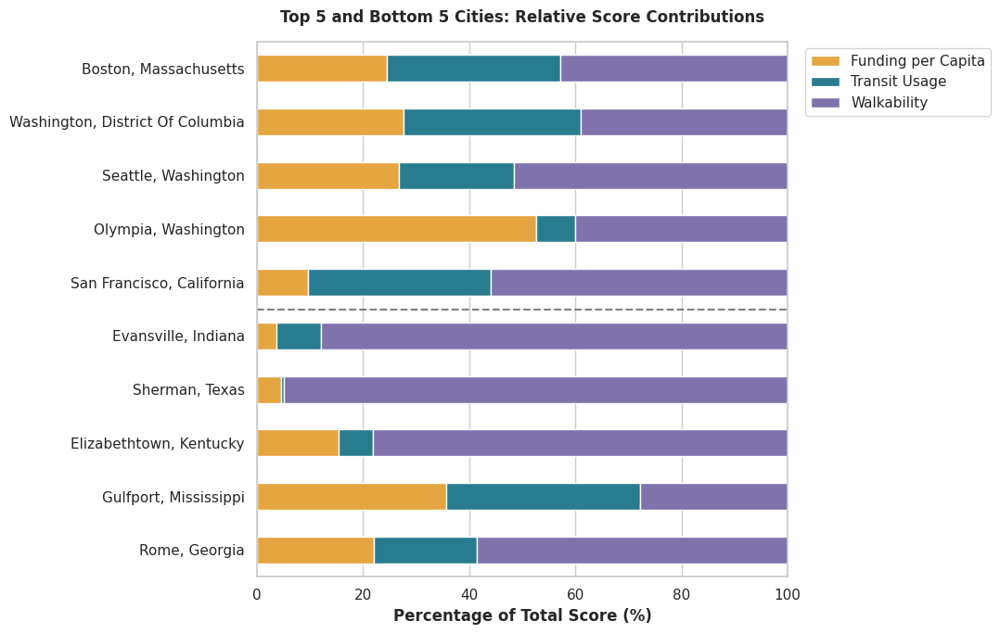
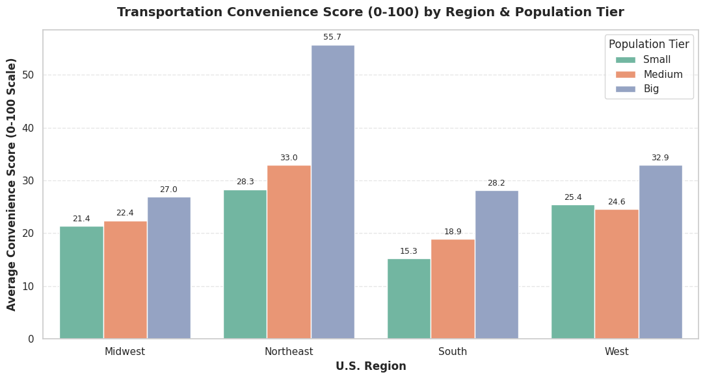
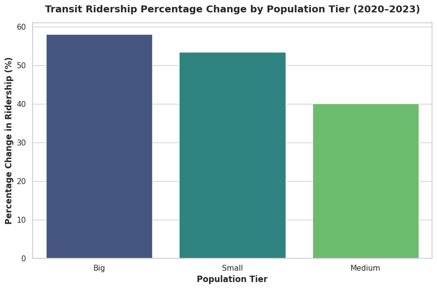

BU MSBA · Team 3 · Data 2020–2023
A Transportation Convenience Score (0–100) for 230 U.S. cities, built from public transit funding, ridership, and walkability data.
Python · pandas · GeoPandas · seaborn · matplotlib
Short on time? Read the executive summary or the recommendations.
We scored 230 U.S. cities across four years (920 city-year rows) using six public data sources. Students and recent grads who skip car ownership need to know which cities are actually easy to live in without one. Big-city transit is well studied. Small and mid-size cities are not, and comparing them means juggling funding, ridership, and walkability from separate sources.
Questions: Which size tier scores best, and which cities beat their size? Does population growth make a city easier to get around without a car? What drives a city's score?
Tiers by 2020 population: Small (under 100K) · Medium (100K–450K) · Big (450K+). The charts label the top tier "Large".
Big cities score highest, but size is not the whole story. 22 small and medium cities match or beat the big-city average of 32.1, and population growth had almost no link to convenience (r ≈ 0.03).

Six public sources, about 2.9M raw rows, merged into one city-year table.
The hardest part was joining sources that use different geographies. We standardized names with string cleaning and used GIS spatial joins to roll block-group walkability up to the city level.
Big cities rose from about 31 to about 34 between 2020 and 2023. Medium (about 23) and small (about 22) stayed mostly flat. The spread inside each tier is larger than the gap between tiers, so size alone does not decide a city's score.

Across all 230 cities, the correlation between 2020–2023 population growth and the change in score is about 0.03. Growth is also close to unrelated to each component: walkability 0.09, funding 0.02, ridership −0.08.

Walkability has the strongest link to the score (0.85), then ridership (0.77) and funding (0.70). Part of that is built into the formula. Boston and Washington are balanced, Seattle and San Francisco lean on walkability, and Olympia leans on funding. Bottom-ranked Sherman (about 95%) and Evansville (about 88%) get almost all of their score from walkability and have very little transit.

The Northeast has the highest average in every tier, and big Northeastern cities average 55.7. Big cities score highest within every region. Small and medium Southern cities score lowest, at 15.3 and 18.9. Across all regions, small cities score low on funding and ridership while their walkability holds up, and that is the largest sub-metric gap in the data.

From 2020 to 2023, ridership rose about 58% in big cities, 53% in small, and 40% in medium. Trips per funding dollar are similar across tiers (small 0.083, medium 0.079, big 0.077), so that gap is small.

Next: add commute time, frequency, and fares, then test Random Forest and XGBoost models for a national index.